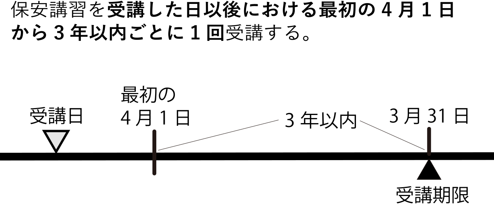
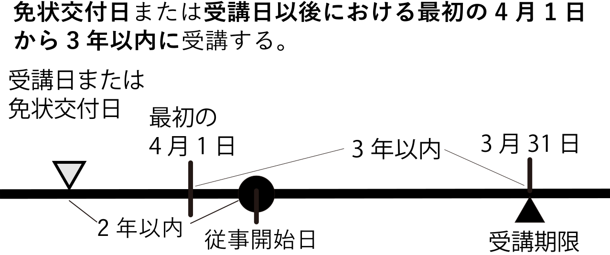

講習の受講義務
製造所等で危険物の取扱作業に従事する危険物取扱者 （甲種・乙種・丙種のいずれかの免状を有している者）は、 都道府県知事が行う保安に関する講習（保安講習）を 定期的に受講しなければなりません。
期間内に保安講習を受講しない場合、消防法の規定により 都道府県知事から免状の返納を命じられることがあります。
ただし、免状の交付は受けていても危険物の取扱作業に従事していない危険物取扱者 および、指定数量未満の危険物を貯蔵し、または取り扱う施設の危険物取扱者は、 保安講習の受講義務はありません。
保安講習は、全国どこの都道府県であっても 受講できます。
まずここだけ押さえよう！
- 製造所等で実際に取扱作業に従事している危険物取扱者には、保安講習の受講義務がある。
- 期間内に受講しないと、免状の返納命令につながることがある。
- 保安講習はどの都道府県でも受講可能で、取得した免状の都道府県に限られない。
出る出るポイント！
- 「従事している危険物取扱者」だけが受講義務あり、という主語の範囲に注目。
- 「指定数量未満の危険物を取り扱う施設」の危険物取扱者は受講義務なし。
- 保安講習は全国どこでも受講できるため、免状の都道府県と異なる場所でもOK。
ひっかけ注意！
- 「免状を持っている者はすべて保安講習を受けなければならない」 という文は誤り。取扱作業に従事していない人には義務なし。
- 「指定数量未満の危険物を取り扱う施設の危険物取扱者も受講義務がある」 と書かれていたら×。
- 「保安講習は免状を交付した都道府県でしか受講できない」 という表現も誤り。全国どこでも受講できる。
講習の受講期限
危険物取扱者の免状を受けていて、現に製造所等において危険物の取扱作業に従事している者は、 当該免状の交付日または講習の受講日のうち遅い日以降に到来する 最初の4月1日から3年以内に、保安講習を受講しなければなりません。
【1】継続して従事する場合

保安講習を受講した日以後、最初の4月1日から3年以内ごとに1回受講する者の受講期限
まずここだけ押さえよう！
- 「継続して従事する場合」は、受講日を基準に、 その後の最初の4月1日から3年以内に1回受講する。
出る出るポイント！
- 図の「受講日 → 最初の4月1日 → 3年以内 → 3月31日」の並びを 1セットで覚えておくと、計算問題にも対応しやすい。
【2】 新たに危険物の取扱作業に従事する者
危険物取扱作業の従事開始日から1年以内に受講し、その後は最初の4月1日から3年以内ごとに受講する者の受講期限
まずここだけ押さえよう！
- 最初の保安講習は従事開始日から1年以内に1回受講する。
- 1回目を受講したあとは、【1】と同じく 「その後の最初の4月1日から3年以内ごとに1回」のルールに切り替わる。
出る出るポイント！
- 「従事開始から1年以内 → 以後は 最初の4月1日から3年以内ごとに1回」という 2段階の流れで覚える。
ひっかけ注意！
- 最初の期限の起算日は免状交付日ではなく従事開始日。 選択肢で「免状の交付日から1年以内」と書いてあれば誤り。
【3】 新たに危険物の取扱作業に従事する者で、かつ、2年以内に免状の交付または講習を受けている者
新たに危険物の取扱作業に従事する者で、従事開始日の時点で 過去2年以内に免状の交付または保安講習を受けている場合は、 「【1】継続して従事する場合」と同じグループとして扱われます。 すでに受けた講習（または免状交付）を基準に、 最初の4月1日から3年以内に保安講習を受講します。

免状交付日または受講日から最初の4月1日を起点として3年以内に受講する者の受講期限
ひっかけ注意！
- 【3】に入るのは、 「従事開始日の前2年以内に免状交付 or 保安講習を受けている人」だけ。 2年をこえている場合は【2】のパターンになる。
- 受講期限の起算日は従事開始日ではなく「受講日／免状交付日」。 図の「受講日／免状交付日 → 最初の4月1日 → 3年以内 → 3月31日」 の順番でイメージしておく。
【4】 免状の交付を受けているが、製造所等で取扱作業に従事していない者
製造所等で危険物の取扱作業に従事していない危険物取扱者、 または指定数量未満の危険物を貯蔵・取り扱う施設で取扱作業を行う危険物取扱者は、 保安講習の受講義務はありません。
クイズ
次は第1章12節：危険物保安監督者に進みます。